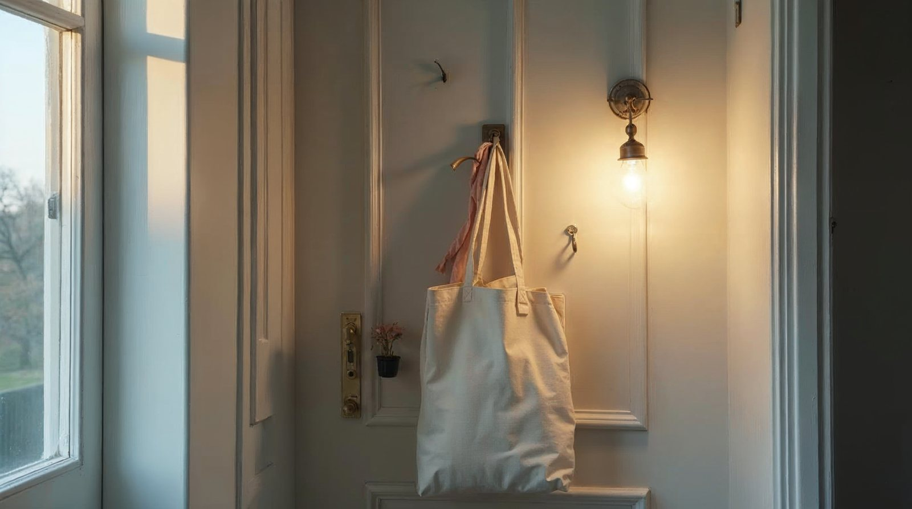
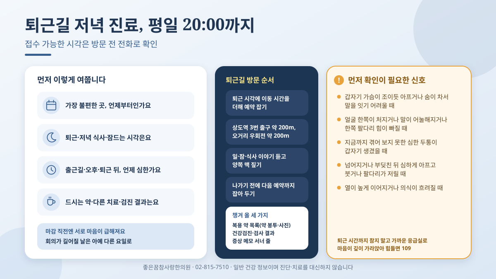

이종호 한의사 감수좋은꿈참사랑한의원 대표원장 (한의사 면허번호 19769)발행 2026-11-25 · 수정 2026-11-26
이 글의 차례
평일 진료는 저녁 8시(20:00)까지입니다. 다만 몇 시까지 들어오셔야 그날 진료를 넉넉히 받으실 수 있는지는 이 글에서 정해 말씀드리기 어렵습니다. 그래서 퇴근길에 들르실 계획이라면 방문 전에 02-815-7510으로 전화해 접수 가능한 시각을 먼저 확인해 주세요.
처음 오시는 날이라면 복용 중인 약 목록, 가지고 계신 검사 결과, 짧은 증상 메모 세 가지만 챙겨 오셔도 이야기가 훨씬 수월해집니다. 아래에서는 저녁 진료를 처음 잡는 법부터, 바쁜 한 주 안에 다시 오시는 시간을 끼워 넣는 법까지 제가 진료실에서 자주 드리는 말씀을 그대로 옮겨 보겠습니다.
저녁 7시, 7호선 안에서
저녁 7시 무렵의 7호선을 떠올려 봅니다. 손잡이를 잡은 손에 힘이 잘 안 들어가고, 뒷목은 하루 종일 모니터 쪽으로 기울어 있던 각도 그대로 굳어 있습니다. 휴대폰 화면에는 아직 답하지 못한 업무 메시지가 남아 있습니다.
상도역이 가까워지면 잠깐 생각이 드실 겁니다. '오늘 내려서 한의원에 들러 볼까. 아니, 지금 가면 늦었으려나. 그냥 주말에 가자.' 그렇게 미룬 주말에는 밀린 잠과 집안일이 기다리고 있고, 다음 주 퇴근길에도 같은 생각을 하게 됩니다.
진료실에서 이런 말씀을 정말 자주 듣습니다. "원장님, 진작 오려고 했는데 시간이 안 맞아서요." 저는 그 말을 들을 때마다 그동안 얼마나 참으셨을까 싶습니다. 아픈 데를 모르셔서가 아니라, 하루가 너무 꽉 차 있어서 자기 몸 차례가 계속 뒤로 밀렸던 것이지요.
이 글은 그렇게 미뤄 오신 분들을 위해 씁니다. 퇴근 뒤에 오셔도 괜찮습니다. 다만 저녁 진료를 조금 더 편하게 받으시려면 알아 두시면 좋은 것들이 있습니다.
왜 저녁 진료는 미리 확인하는 게 좋을까요
평일 진료 시간은 09:30부터 20:00까지이고, 점심시간은 13:00~14:00입니다. 토요일과 일요일, 공휴일은 09:30부터 15:00까지 점심시간 없이 진료합니다.
그런데 '8시까지 진료'와 '8시 직전에 와도 된다'는 같은 말이 아닙니다. 저는 모든 분의 맥부터 짚고, 지금 불편한 곳뿐 아니라 잠·소화·생활 리듬까지 여쭙습니다. 처음 오신 분이라면 이야기를 듣는 데만도 시간이 걸립니다.
마감에 아주 가까이 오시면 서로 마음이 급해집니다. 저도 더 여쭙고 싶은 게 남는데 시계를 보게 되고, 환자분도 하고 싶은 말을 다 못 하고 일어서시게 됩니다. 그래서 접수 마감이 몇 시인지, 그날 기다림이 얼마나 될지는 방문 전 전화로 확인해 주시기를 부탁드립니다.
퇴근 뒤에는 시간이 빠듯하니, 예약을 잡아 두시면 기다리는 시간을 줄이는 데 도움이 될 수 있습니다. 네이버 예약(https://booking.naver.com/booking/13/bizes/1043468)이나 전화로 편한 방법을 고르시면 됩니다.

먼저 이렇게 여쭙니다
처음 오시면 제가 대략 이런 것들을 여쭙니다. 미리 한번 떠올려 보고 오시면 짧은 시간에도 이야기가 깊어집니다.
- 가장 불편한 곳은 어디이고, 언제부터 그러셨나요?
- 하루 중 언제 더 심해지나요? 출근길, 오후 회의 시간, 퇴근 뒤 집에 와서 중 어느 쪽인가요?
- 요즘 몇 시에 퇴근하시고, 저녁 식사와 잠드는 시각은 어떻게 되나요?
- 지금 드시는 약이나 건강기능식품, 다른 병원에서 받고 계신 치료가 있나요?
- 최근에 받으신 건강검진이나 검사 결과가 있나요?
여기에 다 대답하실 필요는 없습니다. 생각나는 만큼만 말씀해 주시면, 나머지는 맥을 짚으면서 제가 천천히 여쭙겠습니다.
첫 저녁 진료, 이렇게 준비해 보세요
처음 오시는 날을 조금 덜 낯설게 만드는 방법을 정리해 봅니다. 거창한 준비는 필요 없습니다.
첫째는 예약입니다. 퇴근 시각이 대략 정해져 있다면 그 시각에서 이동 시간을 더해 예약을 잡아 두세요. 회의가 길어질 것 같은 날이라면 아예 다른 요일로 잡는 편이 마음이 편합니다. 늦어질 것 같으면 미리 전화로 알려 주시면 됩니다.
둘째는 챙겨 올 것입니다. 저는 세 가지를 부탁드립니다.
- 복용 중인 약 목록: 약 이름을 휴대폰으로 찍어 오셔도 되고, 약 봉투를 그대로 가져오셔도 됩니다.
- 검사 결과: 건강검진 결과지나 다른 병원에서 받은 검사 기록이 있으면 함께 보여 주세요.
- 증상 메모: 언제부터, 어떤 때 더 불편한지 휴대폰 메모장에 서너 줄이면 충분합니다.
셋째는 옷차림입니다. 정장이나 꽉 끼는 옷을 입고 오셔도 진료는 받으실 수 있지만, 어깨나 허리를 살펴야 할 수도 있으니 움직이기 편한 옷이면 도움이 됩니다. 이 부분은 오실 때 편하신 대로 하시면 됩니다.
상도역·노량진에서 퇴근길에 오시는 길
한의원은 서울 동작구 만양로2길 2 신성빌딩 3층·5층(상도동)에 있습니다.
7호선을 타신다면 상도역 3번 출구로 나와 약 200m 직진하신 뒤, 오거리에서 오른쪽으로 돌아 약 200m 더 오시면 됩니다. 퇴근길에 지하철에서 내려 그대로 걸어오실 수 있는 거리입니다.
1호선이나 9호선을 타고 노량진역을 지나신다면, 노량진역 3번 출구에서 마을버스 동작01을 타고 신동아리버파크에서 내리시면 됩니다. 저녁에는 버스 간격이 달라질 수 있으니, 시간이 빠듯한 날은 넉넉히 출발해 주세요.
처음 오시는 길이 헷갈리시면 출발 전에 전화로 여쭤 보셔도 괜찮습니다. 주차가 가능한지 같은 것도 방문 전 전화로 확인해 주세요.
첫 진료는 이렇게 흘러갑니다
들어오셔서 접수를 마치면 저는 먼저 양손을 내어 달라고 말씀드립니다. 손목 안쪽에 손가락을 얹고 양쪽 맥을 짚으면서, 어디가 불편해서 오셨는지, 그게 하루 중 언제 심한지, 일과 잠과 식사는 어떤지 여쭙습니다.
맥을 짚는 동안에도 저는 계속 여쭙습니다. "요즘 자다가 깨시나요?", "점심 먹고 나면 속은 어떠세요?" 하고요. 진맥과 대화가 함께 가는 시간입니다. 챙겨 오신 약 목록과 검사 결과도 함께 봅니다.
필요하다고 판단되면 혀를 보거나 배를 살피고, 불편한 부위를 직접 확인합니다. 그런 뒤 지금 상태에서 어떤 진료가 맞을지, 생활에서 무엇부터 바꿔 보면 좋을지 말씀드립니다. 어떤 진료를 할지는 그날 살펴본 내용에 따라 달라지기 때문에 미리 정해 드리기는 어렵습니다.
마지막으로 다음 방문을 함께 정합니다. 저녁 시간대가 편하신지, 주말이 나으신지 여쭙고 무리 없는 날로 잡습니다.
한의원에서 함께 살필 수 있는 경우
퇴근길에 들르시는 분들이 자주 말씀하시는 불편은 대략 이런 것들입니다. 이런 일이 몇 주씩 이어진다면 한번 오셔서 함께 살펴보셔도 좋겠습니다.
- 하루 종일 앉아 일한 뒤 목과 어깨, 허리가 뻣뻣하게 굳는 느낌이 반복될 때
- 퇴근 뒤 지쳐 있는데도 잠들기 어렵거나, 자다가 자주 깰 때
- 늦은 저녁을 먹은 뒤 속이 더부룩하거나 소화가 무거운 날이 잦을 때
- 주말에 쉬어도 피로가 잘 풀리지 않는다고 느끼실 때
이런 불편은 한 군데만 따로 보기보다 일과 잠, 식사의 흐름을 같이 놓고 봐야 할 때가 많습니다. 그래서 저는 맥을 짚으면서 몸 전체의 리듬을 여쭙고, 그날 살펴본 것을 바탕으로 진료 방향을 말씀드립니다.
이런 하루라면 이렇게 잡아 보세요
예를 들어 노량진 쪽 사무실에서 일하고 상도동 집으로 퇴근하는 분이라면, 집에 들르기 전에 먼저 한의원에 오시는 동선이 편할 수 있습니다. 집에 한번 들어가면 다시 나오기가 어렵다는 말씀을 많이 하십니다.
예를 들어 퇴근 시각이 날마다 들쭉날쭉한 분이라면, 평일 저녁을 고집하기보다 주말 오전을 첫 방문으로 잡고 평일은 비교적 일찍 끝나는 날에만 오시는 방법도 있습니다.
예를 들어 아이를 데리러 가야 해서 퇴근 뒤 시간이 거의 없는 분이라면, 점심시간 전후나 주말 가운데 가능한 때를 먼저 전화로 여쭤 보세요. 무리해서 맞추다 보면 오시는 길부터 지치게 됩니다.
어느 쪽이든 정답은 없습니다. 오래 이어 갈 수 있는 시간이 그분께 맞는 시간이라고 저는 생각합니다.
바쁜 한 주에 다시 오시는 시간을 끼워 넣는 법
처음 한 번 오시는 것보다 어려운 게 다시 오시는 일입니다. 저는 이걸 잘 압니다. 첫날에는 큰마음을 먹고 오시지만, 그다음 주에는 또 회의가 잡히고 회식이 생깁니다.
그래서 처음부터 '무리 없이 지킬 수 있는 요일'을 함께 찾는 편입니다. 예를 들어 수요일은 비교적 일찍 퇴근하신다면 수요일 저녁으로, 평일이 도저히 어렵다면 토요일이나 일요일 오전으로 잡는 식입니다. 주말과 공휴일은 오후 3시까지 진료하니, 이 시간도 방문 전 전화로 확인하시고 이용해 보세요.
다음 예약은 진료를 마치고 나가시기 전에 미리 잡아 두시기를 권합니다. 집에 가서 잡으려고 하면 다시 미루게 되기 쉽습니다. 일정이 바뀌면 전화로 옮기시면 됩니다.
다시 오시면 저는 지난번 이야기를 이어서 여쭙습니다. "지난번에 오후 3시쯤 어깨가 제일 무겁다고 하셨지요. 이번 주는 어떠셨어요?" 이렇게요. 한 주 동안 어떤 날이 편했고 어떤 날이 힘들었는지 들어야 다음에 무엇을 바꿀지 함께 정할 수 있습니다.
진료하는 의료진은 이종호 대표원장, 조영기 수석진료원장, 정원영 진료원장입니다. 어느 요일 저녁에 어느 원장이 진료하는지는 방문 전 전화로 확인해 주세요.
일상에서 먼저 해 볼 수 있는 것
한의원에 오시기 전에도, 오신 뒤에도 출퇴근길과 책상에서 해 볼 수 있는 것들이 있습니다. 거창하지 않은 것만 골랐습니다.
- 지하철에서 서 있을 때 휴대폰을 눈높이 가까이 들어 고개가 너무 숙여지지 않게 하기
- 한 시간에 한 번은 자리에서 일어나 어깨를 천천히 뒤로 돌리고, 정수기까지라도 걸어 다녀오기
- 모니터 위쪽 끝이 눈높이와 비슷하게 오도록 높이를 조금 맞춰 보기
- 퇴근 전 다음 날 할 일을 메모해 두고, 집에 와서는 업무 메신저 알림 끄기
- 저녁이 늦어지는 날은 퇴근 전에 가볍게 한 끼를 먼저 먹고, 집에 와서는 따뜻한 물이나 차 정도로 마무리하기
이 가운데 한두 가지만 골라 일주일 해 보시고, 다음에 오시면 어떤 게 쉬웠고 어떤 게 어려웠는지 들려주세요. 다 지키지 못하셔도 괜찮습니다. 지키기 어려웠던 사정을 듣는 것도 제게는 진료의 일부입니다.
이렇게 기록해 오시면 상담이 쉬워집니다
바쁘신 분께 일기를 쓰라고 하면 부담만 됩니다. 그래서 저는 아주 짧은 기록만 부탁드립니다.
- 그날 퇴근 시각과 잠든 시각, 일어난 시각
- 하루 중 가장 불편했던 때와 그때 하고 있던 일
- 저녁을 먹은 시각과 식사 뒤 속이 어땠는지
휴대폰 메모장에 한 줄씩이면 충분합니다. 일주일치가 모이면 어느 요일, 어느 시간에 몸이 힘들어하는지 저도 환자분도 조금 더 분명하게 보게 됩니다.
이런 증상은 먼저 확인이 필요합니다
- 갑자기 가슴이 조이듯 아프거나, 숨이 차서 말을 잇기 어려울 때
- 한쪽 팔다리에 힘이 빠지거나, 말이 어눌해지거나, 얼굴 한쪽이 처질 때
이런 신호가 있으면 한의원보다 가까운 병원이나 응급실을 먼저 찾으세요.
퇴근길에 오시는 분께 드리는 말
일을 하느라 몸을 미뤄 오신 것을 탓하고 싶지 않습니다. 그만큼 책임질 일이 많으셨던 거겠지요. 다만 이제는 그 하루 안에 자기 몸을 위한 시간을 조금만 끼워 넣어 보셨으면 합니다.
진료실 문을 열고 들어오시는 순간만큼은 업무 메시지도, 내일 회의도 잠시 내려놓으셔도 됩니다. 짧은 저녁 시간이라도 편히 앉아 숨 한번 고르고, 하고 싶던 이야기를 다 하고 가셨으면 하는 것이 제 바람입니다.
퇴근길에 상도역에서 내리실 생각이 드시면 먼저 전화 한 통 주세요. 그날 몇 시까지 들어오시면 되는지 알려 드리겠습니다. 오시면 저는 양손을 내어 달라고 말씀드리고, 요즘 몇 시에 퇴근하시는지부터 여쭙겠습니다.

여쭙는 것
- 가장 불편한 곳은 어디이고, 언제부터 그러셨나요?
- 하루 중 언제 더 심해지나요? 출근길, 오후 회의 시간, 퇴근 뒤 집에 와서 중 어…
- 요즘 몇 시에 퇴근하시고, 저녁 식사와 잠드는 시각은 어떻게 되나요?
생활에서 해 볼 것
- 지하철에서 서 있을 때 휴대폰을 눈높이 가까이 들어 고개가 너무 숙여지지 않게 하기
- 한 시간에 한 번은 자리에서 일어나 어깨를 천천히 뒤로 돌리고, 정수기까지라도 걸어…
- 모니터 위쪽 끝이 눈높이와 비슷하게 오도록 높이를 조금 맞춰 보기
한의원에서 함께 살필 것
- 하루 종일 앉아 일한 뒤 목과 어깨, 허리가 뻣뻣하게 굳는 느낌이 반복될 때
- 퇴근 뒤 지쳐 있는데도 잠들기 어렵거나, 자다가 자주 깰 때
- 늦은 저녁을 먹은 뒤 속이 더부룩하거나 소화가 무거운 날이 잦을 때
먼저 확인이 필요한 신호
- 갑자기 가슴이 조이듯 아프거나, 숨이 차서 말을 잇기 어려울 때
- 한쪽 팔다리에 힘이 빠지거나, 말이 어눌해지거나, 얼굴 한쪽이 처질 때
한눈에 보는 표
| 구분 | 핵심 |
|---|---|
| 여쭙는 것 | 가장 불편한 곳은 어디이고, 언제부터 그러셨나요? 하루 중 언제 더 심해지나요? 출근길, 오후 회의 시간, 퇴근 뒤 집에 와서 중 어느 쪽인가요? |
| 생활에서 해 볼 것 | 지하철에서 서 있을 때 휴대폰을 눈높이 가까이 들어 고개가 너무 숙여지지 않게 하기 한 시간에 한 번은 자리에서 일어나 어깨를 천천히 뒤로 돌리고, 정수기까지라도 걸어 다녀오기 |
| 한의원에서 함께 살필 것 | 하루 종일 앉아 일한 뒤 목과 어깨, 허리가 뻣뻣하게 굳는 느낌이 반복될 때 퇴근 뒤 지쳐 있는데도 잠들기 어렵거나, 자다가 자주 깰 때 |
| 먼저 확인이 필요한 신호 | 갑자기 가슴이 조이듯 아프거나, 숨이 차서 말을 잇기 어려울 때 한쪽 팔다리에 힘이 빠지거나, 말이 어눌해지거나, 얼굴 한쪽이 처질 때 |
자주 묻는 질문
평일 저녁 몇 시까지 가면 진료를 받을 수 있나요?
평일 진료는 09:30~20:00(점심 13:00~14:00)입니다. 접수 마감 시각과 그날 기다림은 퇴근 뒤 오시기 전에 02-815-7510으로 전화해 확인해 주세요.
처음 갈 때 무엇을 챙겨 가면 좋을까요?
복용 중인 약 목록(약 봉투나 사진도 괜찮습니다), 가지고 계신 검사 결과, 언제부터 어떤 때 불편한지 적은 짧은 메모를 챙겨 오시면 상담이 수월해집니다.
평일 저녁이 어려우면 주말에도 진료하나요?
토·일·공휴일은 09:30~15:00에 점심시간 없이 진료합니다. 그날 진료 가능 여부는 방문 전 전화로 확인해 주세요.
예약은 어떻게 하나요?
전화(02-815-7510)나 네이버 예약(https://booking.naver.com/booking/13/bizes/1043468)으로 잡으실 수 있습니다. 퇴근 시각이 늦어질 것 같으면 미리 전화로 알려 주세요.
좋은꿈참사랑한의원은 재진 때 지난번 이야기부터 이어서 여쭙니다. 진료시간과 예약은 오시는 길에서 확인하세요.
어디서 상담받을 수 있나요?
좋은꿈참사랑한의원은 서울 동작구 만양로2길 2 신성빌딩 3층·5층(서울 동작구 상도동, 7호선 상도역 3번 출구 근처)에 있습니다. 한의사 3명(이종호 대표원장, 조영기 수석진료원장, 정원영 진료원장)이 진료합니다. 진료시간은 평일 09:30~20:00(점심 13:00~14:00), 토·일·공휴일 09:30~15:00이며, 방문 전 전화로 확인을 권합니다. 예약은 네이버 예약, 카카오톡 상담, 전화 02-815-7510로 받습니다.
이 글은 일반적인 건강 정보이며 개인의 진단이나 치료를 대신하지 않습니다. 증상이 있거나 복용 중인 약이 있다면 진료를 통해 확인하세요. 치료 효과는 개인마다 다를 수 있습니다.
작성 기준: 일반적으로 알려져 있는 건강 정보를 참고해 정리했습니다(대표원장 감수). 증상 기록은 1~2주 동안 하루 1회, 비슷한 시간에 적어 오시면 지난 상태와 비교하기 쉽습니다.